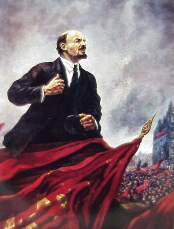
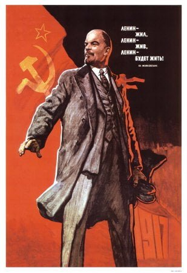
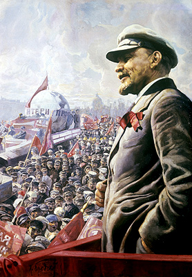

Le 7 novembre 1917, les bolcheviks (parti social-démocrate) dirigés par Vladimir Ilitch Lénine (révolutionnaire, politicien et fondateur de l’URSS) organisent un coup d’État contre le gouvernement provisoire de l’époque. Cet événement, appelé la « révolution d’octobre », permet à la nouvelle république bolchevique de sortir de la Première Guerre mondiale grâce à un armistice en décembre 1917. La république soviétique supprime la propriété privé et les banques pour basculer sur une propriété d’État sur les moyens de production (à l’exception de la production agricole). L’État gagne ainsi le monopole du commerce intérieur, des transports, de l’eau et de l’électricité.